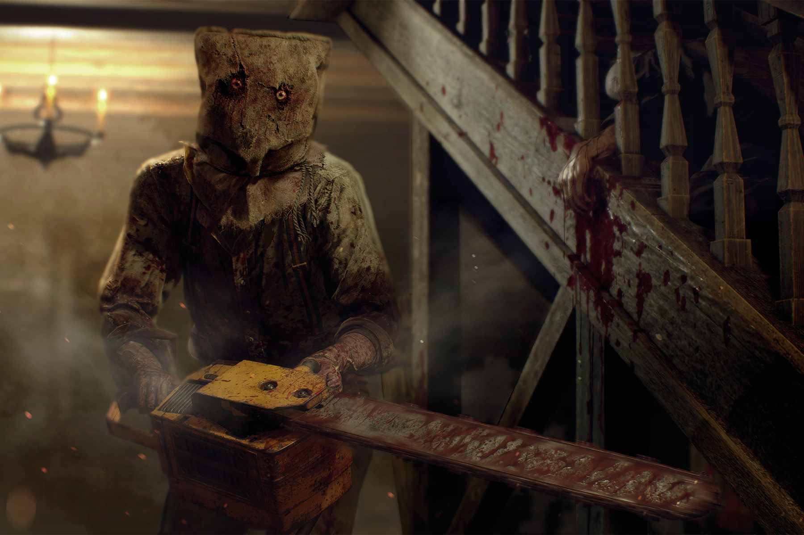
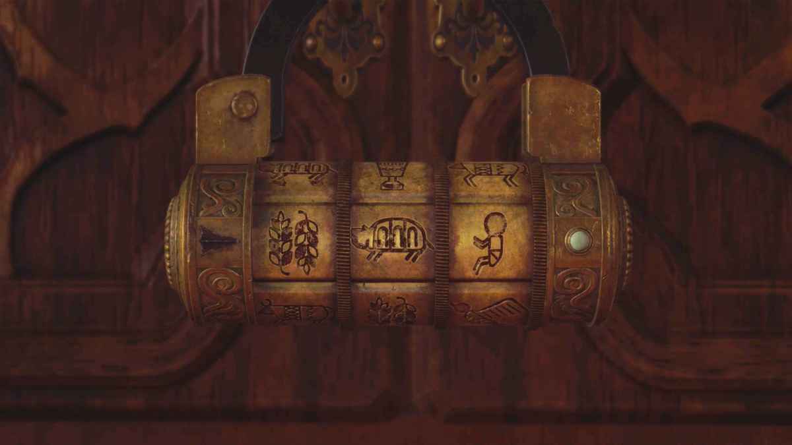
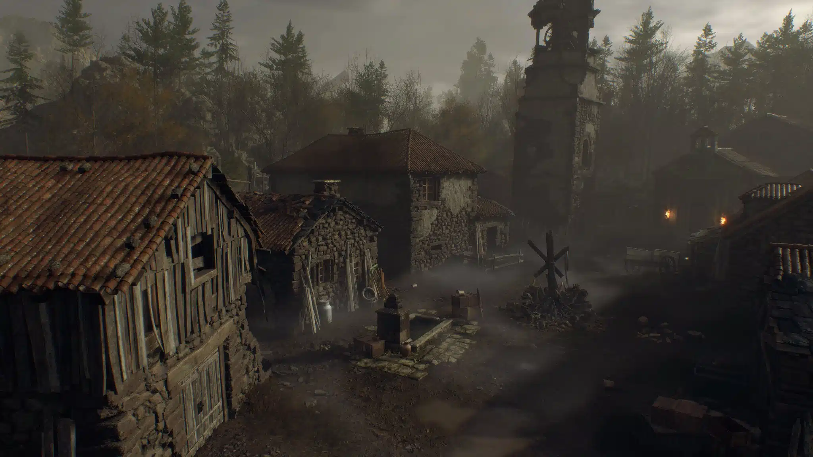
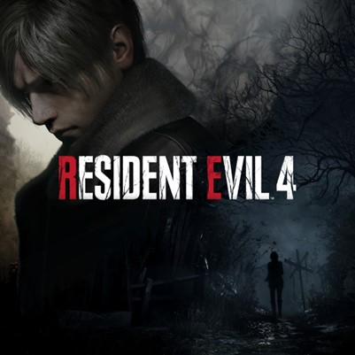

Resident Evil 4" is an action-adventure video game that follows the story of Leon S. Kennedy, a special agent, on a mission to rescue the U.S. President's daughter, Ashley Graham, who has been kidnapped. Unlike previous games in the series, "Resident Evil 4" takes a departure from traditional survival horror, focusing more on action and suspense. The game is set in a remote European village, where Leon encounters sinister villagers infected by a mind-controlling parasite. These villagers are hostile and pose a constant threat, creating intense and suspenseful combat situations. As players progress, they'll uncover the dark secrets behind the villagers and the mysterious cult that controls them. "Resident Evil 4" features a third-person over-the-shoulder perspective, allowing for more precise aiming and dynamic combat. Players must manage their resources, such as ammo and healing items, as they take on a variety of grotesque and challenging enemies, including terrifying bosses. The game also includes puzzles, which add depth to the gameplay. Leon can purchase and upgrade weapons, making it essential to spend in-game currency wisely. With its thrilling storyline, gripping action, and a sense of constant danger, "Resident Evil 4" is a critically acclaimed title that has left a significant impact on the video game industry. It combines elements of horror and action, delivering an exciting and unforgettable gaming experience.